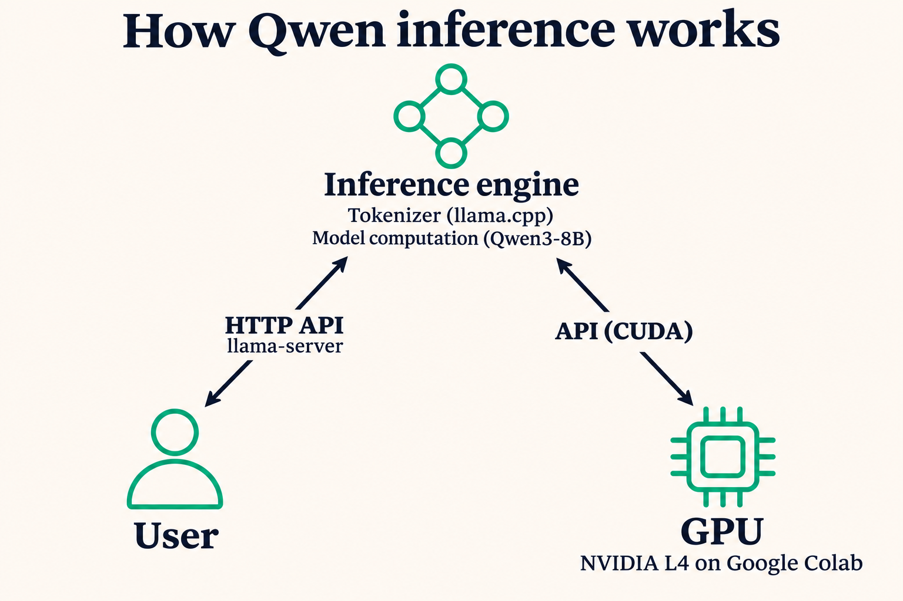

Qwen3-8B Inference on a Cloud GPU
I deployed an open-weight language model in Google Colab and verified that a Python client could send a chat request and receive a generated reply over HTTP.
How inference works

The user sends a prompt through the HTTP API provided by llama-server. Inside the inference engine, llama.cpp uses Qwen’s tokenizer to convert text into token IDs and runs the model using its architecture and learned weights. The engine uses the CUDA API to dispatch numerical operations to the NVIDIA L4. It decodes the generated tokens into text, which the HTTP API returns to the user.
1. Set up and start the service
Run the setup cells in order in a Colab GPU runtime. Each cell uses variables defined in the preceding cells.
Check GPU memory and disk space
nvidia-smi reports the GPU and available VRAM. The Colab runtime used an NVIDIA L4, rated for 24 GB of GPU memory. The separate disk check confirms there is room for the engine and the 5.03 GB model file. L4 specifications · Qwen model file
Show the GPU and disk check
import platform
import shutil
import subprocess
from pathlib import Path
if not Path("/content").is_dir() or platform.machine() != "x86_64":
raise RuntimeError("Run this in a hosted Colab GPU runtime on Linux x86_64.")
work = Path("/content/qwen-colab")
work.mkdir(exist_ok=True)
nvidia_smi = shutil.which("nvidia-smi")
if nvidia_smi is None:
raise RuntimeError(
"nvidia-smi is unavailable. In Colab, choose "
"Runtime > Change runtime type > Hardware accelerator > GPU. "
"Save, connect, and rerun this cell."
)
gpu_query = [
nvidia_smi,
"--query-gpu=name,driver_version,memory.total,memory.used,memory.free",
"--format=csv",
]
subprocess.run(gpu_query, check=True)
print(f"Free disk space: {shutil.disk_usage(work).free / 2**30:.1f} GiB")Install llama.cpp and confirm CUDA
The CUDA build includes llama-server and the engine’s tokenizer implementation. The notebook downloads the prebuilt binary and its CUDA libraries, verifies the archives and checks that the engine sees CUDA0.
Show the installation and CUDA check
import hashlib
import os
def download_verified(url, destination, expected_sha):
if destination.exists():
with destination.open("rb") as file:
if hashlib.file_digest(file, "sha256").hexdigest() == expected_sha:
print("Reusing verified file:", destination.name, flush=True)
return
partial = destination.with_suffix(destination.suffix + ".part")
subprocess.run([
"curl", "--fail", "--location", "--retry", "3",
"--progress-bar", "--output", str(partial), url,
], check=True)
with partial.open("rb") as file:
actual_sha = hashlib.file_digest(file, "sha256").hexdigest()
if actual_sha != expected_sha:
partial.unlink()
raise RuntimeError(f"Checksum verification failed: {destination.name}")
partial.replace(destination)
release = "https://github.com/ggml-org/llama.cpp/releases/download/b12090"
packages = {
"llama-b12090-bin-ubuntu-cuda-12.8-x64.tar.gz":
"6027ff15d9c359ad300f67ca374c7c3a8f3c54e928b147c9e13ab7ec5cb4c14c",
"cudart-llama-b12090-bin-ubuntu-cuda-12.8-x64.tar.gz":
"c7034bfc50a65b8e249d0e267a06ba6d2e196d4573eff63ed76d2540096f4a89",
}
engine = work / "engine"
engine.mkdir(exist_ok=True)
for filename, sha256 in packages.items():
archive = work / filename
download_verified(f"{release}/{filename}", archive, sha256)
subprocess.run(["tar", "-xzf", str(archive), "-C", str(engine)], check=True)
server_bin = next(engine.rglob("llama-server"))
library_dirs = sorted({str(path.parent) for path in engine.rglob("*.so*")})
env = os.environ.copy()
if env.get("LD_LIBRARY_PATH"):
library_dirs.append(env["LD_LIBRARY_PATH"])
env["LD_LIBRARY_PATH"] = os.pathsep.join(library_dirs)
subprocess.run([str(server_bin), "--version"], env=env, check=True)
devices = subprocess.run(
[str(server_bin), "--list-devices"], env=env, check=True,
stdout=subprocess.PIPE, stderr=subprocess.STDOUT, text=True,
).stdout
print(devices)
if "CUDA0" not in devices:
raise RuntimeError("The inference engine did not detect CUDA0. Check the output above and your GPU runtime.")Download the Qwen3-8B weights
The 4-bit GGUF file contains the trained weights and model metadata, including information the engine needs for tokenization. The notebook verifies its SHA-256 checksum after download.
Show the model download
model = work / "Qwen3-8B-Q4_K_M.gguf"
download_verified(
f"https://huggingface.co/Qwen/Qwen3-8B-GGUF/resolve/main/{model.name}",
model,
"d98cdcbd03e17ce47681435b5150e34c1417f50b5c0019dd560e4882c5745785",
)
print(f"{model.name}：{model.stat().st_size / 1e9:.2f} GB")Start the HTTP service
llama-server loads the model and listens on 127.0.0.1:18080. I chose that port after finding 8080 occupied. HTTP 200 from /health confirms that the service is ready. The startup log shows which model layers were placed on the GPU.
Show the server launch and readiness check
import socket
import time
import requests
host, port = "127.0.0.1", 18080
base_url = f"http://{host}:{port}"
log_path = work / "server.log"
model_alias = "qwen3-8b"
def stop_server():
process = globals().get("server_process")
if process is None or process.poll() is not None:
return
process.terminate()
try:
process.wait(timeout=10)
except subprocess.TimeoutExpired:
process.kill()
process.wait()
stop_server()
with socket.socket() as probe:
if probe.connect_ex((host, port)) == 0:
raise RuntimeError(f"Port {port} is already in use. Choose another port, such as 18081, and retry.")
command = [
str(server_bin), "-m", str(model), "--alias", model_alias,
"--host", host, "--port", str(port),
"-c", "4096", "-np", "1", "-ngl", "99", "--jinja",
]
with log_path.open("w") as log:
server_process = subprocess.Popen(
command, env=env, stdout=log, stderr=subprocess.STDOUT,
)
try:
deadline = time.monotonic() + 180
while time.monotonic() < deadline:
if server_process.poll() is not None:
raise RuntimeError(f"The server exited with code {server_process.returncode}.")
try:
health = requests.get(f"{base_url}/health", timeout=2)
except (requests.ConnectionError, requests.Timeout):
pass
else:
if health.status_code == 200 and health.json().get("status") == "ok":
break
time.sleep(1)
else:
raise TimeoutError("The server did not become ready within 180 seconds.")
except BaseException:
stop_server()
print("\n".join(log_path.read_text(errors="replace").splitlines()[-30:]))
raise
print("HTTP", health.status_code, health.json())
for line in log_path.read_text(errors="replace").splitlines():
if "offloaded" in line or "CUDA0 model buffer" in line:
print(line)
subprocess.run(gpu_query, check=True)2. Test and stop the service
Send one JSON request to POST /v1/chat/completions with stream: true. The client checks the HTTP status, displays each text chunk as it arrives and waits for the [DONE] marker.
Show the streaming request
chat_url = f"{base_url}/v1/chat/completions"
payload = {
"model": model_alias,
"messages": [
{"role": "user", "content": "How do I deploy Qwen3-8B on Google Colab? Give a short step-by-step guide."},
],
"chat_template_kwargs": {"enable_thinking": False},
"max_tokens": 512,
"temperature": 0.3,
}
import json
with requests.post(
chat_url, json={**payload, "stream": True},
stream=True, timeout=(5, 90),
) as response:
if not response.ok:
print(response.text)
response.raise_for_status()
received_text = False
completed = False
for line in response.iter_lines(chunk_size=1):
if not line.startswith(b"data:"):
continue
data = line[len(b"data:"):].strip()
if data == b"[DONE]":
completed = True
break
event = json.loads(data)
if event.get("error"):
raise RuntimeError(event["error"])
choices = event.get("choices", [])
if choices:
text = choices[0]["delta"].get("content")
if text:
print(text, end="", flush=True)
received_text = True
print()
if not received_text or not completed:
raise RuntimeError("No response text or end-of-stream marker was received. Check server.log.")When finished, stop the server with one line.
stop_server()